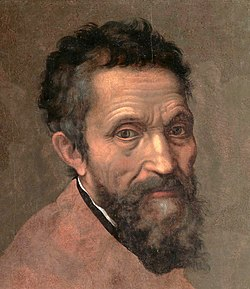

ბიოგრაფია
მიქელანჯელო დაიბადა ლუდოვიკო ლეონარდო ბუონაროტის ოჯახში 1475 წლის 6 მარტს ქალაქ კაპრეზში (ახლანდელი
პროვინცია არეცო), ფლორენციის მახლობლად. დედამისი იყო ფრანჩესკა დე ნერი დი მინიატო დელ სერა. მას ხუთი
შვილი ჰყავდა და გარდაიცვალა, როცა მიქელანჯელო მხოლოდ ექვსი წლისა იყო.
მამამისი ადგილობრივი თვითმმართველობის თავი იყო. ის სასტიკი წინააღმდეგი იყო იმისა, რომ საკუთარი შვილი მოქანდაკე ყოფილიყო
და მის მომავალთან დაკავშირებით სხვა გეგმები ჰქონდა. ამან განაპირობა მიქელანჯელოს გადაწყვეტილება, 13 წლის ასაკში, გადასულიყო
დომენიკო გირლანდაიოს სახელოსნოში, მის ასისტენტად. სადაც ის, სამი წლის განმავლობაში, ფრესკის ხელობას
ეუფლებოდა და ცნობილი მხატვრების ნამუშევრების ხატვას ცდილობდა, რასაც ისე ახერხებდა, რომ ხშირად ორიგინალისაგან გარჩევა
შეუძლებელი იყო. სწორედ გირლანდაიოს რეკომენდაციით სწავლობდა და მუშაობდა მიქელანჯელო, 1490−1492 წლებში, ფლორენციის
იმდროინდელ მმრათველ, ლორენცო მედიჩის ვილაში. ამ პერიოდის ნამუშევრებია, „კენტავრების ბრძოლა“ და „მადონა კიბესთან“. როცა
1492 წელს მეგობარმა პოეტმა ანჯელო პოლიციანომ შეაგულიანა ბარელიეფის პირველი ესკიზი გაეკეთებინა, ოვიდიუსის „მეტამორფოზების“
XII წიგნით შთაგონებულმა მიქელანჯელომ მარმარილოში გამოკვეთა „კენტავრების ბრძოლა“. ნაწარმოების შექმნიდან სულ ცოტა ხანში
მიქელანჯელომ გამოკვეთა „მადონა კიბეზე“, რომელშიც დონატელოსა და ტრადიციული წმინდა ხელოვნების სტილისტური ხერხები
გამოიყენა.
ლორენცოს გარდაცვალების შემდეგ, ფლორენციის ახალმა მმართველმა, პიერო მედიჩიმ უარი თქვა მიქელანჯელოს ვილაში დარჩენაზე.
1492 წელს გადავიდა ახალგაზრდა ხელოვანი ბოლონიაში. ბოლონიაში მიქელანჯელომ სან-დომენიკო მაჯორეს ეკლესიისთვის გამოკვეთა
„მუხლმოყრილი ანგელოზი“, ანტიკური სულის ნამუშევარი.
20 წლის მიქელანჯელო მიიღო ალდოვრანდის ოჯახის ერთ-ერთმა წევრმა, რომლის დავალებითაც მან წმინდა პეტრონიუსის ეკლესიაში,
წმინდა დომინიკუსის სამარხისათვის, ორი წმინდანის ფიგურა და ერთი ანგელოზის ქანდაკება შექმნა. ერთი წლის შემდეგ, როცა მისმა
ხელოვნებამ ბოლონიაში დიდ წარმატებას ვერ მიაღწია, მიქელანჯელო სავონაროლაში დაბრუნდა.
მიქელანჯელო რომში 1496 წლის 25 ივნისს 21 წლის ასაკში ჩავიდა.[9] იმავე წლის 4 ივლისს, კარდინალ რაფაელ რიარიოს
დავალებით მან მუშაობა ბახუსის ქანდაკებაზე დაიწყო, თუმცა კარდინალს მისი ნამუშევარი არ მოეწონა და ქანდაკებამ
ადგილი ბანკირი ჯაკოპო გალის ბაღში დაიდო. რომში კარდინალმა ბილჰერეს დე ლაგრაულასმა, სან-დიონისოს აბატმა და
საფრანგეთის მეფე კარლოს VIII-ს ელჩმა პაპ ალექსანდრე VI-ს კარზე, მიქელანჯელოს ქანდაკება შეუკვეთა. 1499 წელს
მიქელანჯელომ დაასრულა „პიეტა“. 1501 წელს ფლორენციაში დაბრუნებულმა სენიორიის მოედნისთვის ზომების გამო
„გიგანტად“ წოდებული „დავითის“ გამოკვეთა დაიწყო. ცოტა ხნის შემდეგ ტემპერით ხეზე დახატა „ტონდო დონი“,
რომელიც წარმოგვიდგენს წმინდა ოჯახსა და წმინდა იოანე ნათლისმცემელს.
პაპმა იულიუს II-მ, რომელმაც თავისი პაპობა ეკლესიის დამოუკიდებლობის განმტკიცებასა და იტალიაში საეპისკოპოსო
სახელმწიფოს საზღვრების გაფართოებას შეალია, მიქელანჯელო ვატიკანის ბაზილიკაში დიდებული აკლდამის შესაქმნელად დაიბარა.
იულიუს II-ს მიქელანჯელოს 40-ქანდაკებიანი პროექტი ისე მოეწონა, რომ იგი მაშინვე გაგზავნა კარარის სამტეხლოში.
რვა თვის განმავლობაში ხელოვანი არჩევდა და ჭრიდა მარმარილოს ლოდებს. თუმცა პაპის ეს გატაცება დიდხანს არ გაგრძელებულა.
როგორც ჩანს, პაპის არქიტექტორმა დონატო ბრამანტემ და მისმა მეგობარმა რაფაელმა იულიუს II დაარწმუნეს, რომ არ ღირდა
აკლდამა სიცოცხლეშივე აეგო და უზარმაზარი ბაზილიკის პროექტი წარუდგინეს, რომელიც ქრისტეს ეკლესიის ძლევამოსილებისა
და დიდების მსოფლიო სიმბოლო იქნებოდა. მართლაც, რომის პაპმა თვის სახელის უკვდავსაყოფად არა აკლდამის აშენება,
არამედ მონუმენტური ტაძრის რეკონსტრუქცია გადაწყვიტა. მიქელანჯელო სამუშაოს გასაგრძელებლად საჭირო თანხისა და მხარდ
აჭერის
გარეშე დარჩა.
იულიუს II-მ, რომელმაც 1506 წელს ბოლონია დაიკავა, ბრინჯაოს ქანდაკება შეუკვეთა. რამდენიმე წლის შემდეგ ქანდაკება გაანადგურეს.
თითქმის იმავდროულად იულიუს II-მ მიქელანჯელოს შესთავაზა მოეხატა სიქსტეს კაპელის თაღი, რომელიც ადრექრისტიანული ტაძრები
ს
დარად ცისფრად შეღებილი და ოქროსფერი ვარსკვლავებით მოჭედილი იყო. მიქელანჯელო ჯერ უარზე იდგა, რადგან მხატვრობა ქანდაკებასთან
შედარებით წვრილმან საქმედ მიაჩნდა. 1508–1512 წლებში მიქელანჯელო რამდენიმე ესკიზითა და რამდენიმე ფლორენციელი მუშის
დახმარებით შრომას შეუდგა. მალე მუშების უმრავლესობა დაითხოვა და სიქსტეს კაპელაში გამოიკეტა და შიგ არავის უშვებდა და
მარტო მუშაობდა.
მიქელანჯელომ 1524 და 1531 წლებში შექმნა „ჰერცოგების აკლდამები“, მაგრამ პროექტი არ დასრულებულა
რომში მიქელანჯელო სანტა-მარია-დი-ლორეტოს ეკლესიის მახლობლად ცხოვრობდა. მიქელანჯელოს სახლი 1874 წელს დაანგრიეს,
ხოლო შემორჩენილი არქიტექტურული ელემენტები 1930 წელს განადგურდა. მისი სახლის რეკონსტრუქცია დღისთვის იანიკულის
ბორცვზე მდებარეობს.
1546 წელს მიქელანჯელო ვატიკანში დაინიშნა წმინდა პეტრეს ბაზილიკის არქიტექტორად. 1542 წელს პავლეს კაპელისთვის
მუშაობა დაიწყო „სავლეს მოქცევაზე“, რასაც მოჰყვა „წმინდა პეტრეს ჯვარცმა“, რომელიც 1550 წელს დაასრულა. წმინდა
პეტრეს ბაზილიკის დასრულებამდე, 1564 წელს მიქელანჯელო 88 წლის ასაკში გარდაიცვალა. მისი სურვილის მიხედვით ის რომიდან
ფლორენციაში გადაასვენეს და დაკრძალეს სანტა კროჩეს ბაზილიკაში.